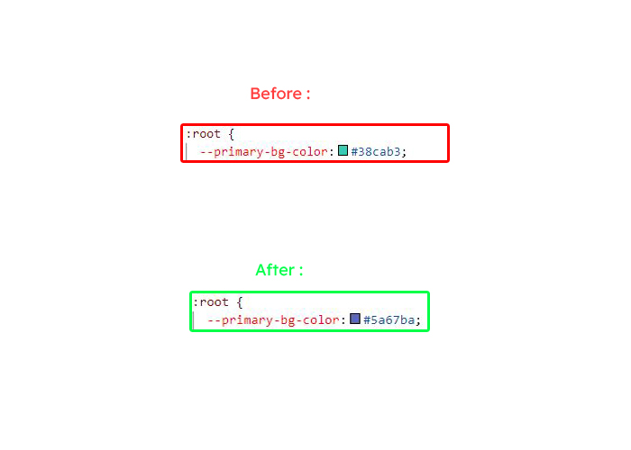
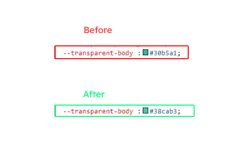
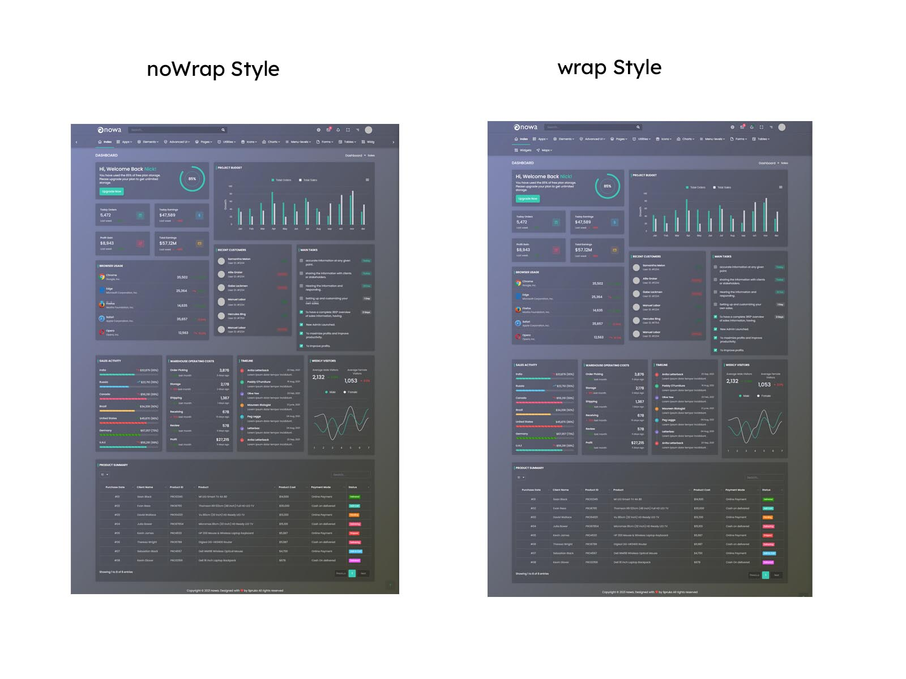

FAQ'S
1) How to Change Font Style ?
Step 1:
Go To _style.scss ( assets/scss/style.scss )
if you want to change another font-family Go to the site Google Fonts And Slect One font Family and import In to style.css file
How to Select font Family
Example:

Step 2:
And paste Your Selected font-family in _fonts.scss
Example:
@import url("https://fonts.googleapis.com/css?family=Roboto:300,400,500,700,900");
Step 3:
And add Your Selected font-family in _custom-styles.scss(assets/scss/custom/_custom-styles.scss)
Example:
body {
font-family: "Roboto", sans-serif;
}
2) How to Change Primary Color ?
Step 1:
Go To _custom-styles.scss (assets/scss/custom/_custom-styles.scss )
You will find --primary-bg-color:#38cab3; , where you can simply change color code to change primary color
How to Change Primary Color
Example:

Simply you can also change color for primary-bg-hover:#5cd3b9; & --primary-bg-border:#38cab3; , where you can simply change color code to change them
3) How to Change Logo ?
Go To "assets/img/brand" folder and replace your logo with Previous Logos within in image size. note: Please don't increase logo sizes. Replace your logo within given image size. otherwise the logo will not fit in particular place it disturbs the template design.
4) How to Enable RTL version?
One more methode to add RTL version
open custom.js path:(HTML/Nowa/assets/js/custom.js) file go to Left-menu Styles. and remove comments for $('body').addClass('rtl') to enable RTL version as shown in below
/*RTL Layout Style*/
// $('body').addClass('rtl');
/*RTL Layout Style End*/
$('body').addClass('rtl') as shown below
/*RTL Layout Style*/
$('body').addClass('rtl');
/*RTL Layout Style End*/
5) How to Enable Darktheme?
open custom.js path:(HTML/Nowa/assets/js/custom.js) file go to SWITCHER-toggle and remove comments for dark-mode to enable dark-mode style as shown in below
/*Dark Layout Start*/
// $('body').addClass('dark-theme');
/*Dark Layout End*/
dark-mode as shown below
/*Dark Layout Start*/
$('body').addClass('dark-theme');
/*Dark Layout End*/
6) How to Enable Transparent theme?
open custom.js path:(HTML/Nowa/assets/js/custom.js) file go to Transparent Layout and remove comments for transparent-theme to enable Transparent theme style as shown in below
/*Transparent Layout Start*/
// $('body').addClass('transparent-theme');
/*Transparent Layout End*//
dark-mode as shown below
/*Transparent Layout Start*/
$('body').addClass('transparent-theme');
/*Transparent Layout End*/
7) How to Change Transparent body color?
Step 1:
Go To _custom-styles.scss (assets/scss/custom/_custom-styles.scss )
You will find --transparent-body :#30b5a1; , where you can simply change color code to change transparent body color
Example:Below image shows Before and After changing transparent body color

8) How to Enable Background image in Transparent theme?
open custom.js path:(HTML/Nowa/assets/js/custom.js) file go to Transparent image1 Layout and remove comments for bg-img1 & transparent-theme to enable Transparent theme with background image style as shown in below
/*Transparent Layout Start*/
// $('body').addClass('transparent-theme');
/*Transparent Layout End*/
/*Transparent image1 Layout Start*/
// $('body').addClass('bg-img1');
/*Transparent Layout End*/
bg-img1 & transparent-theme as shown below
/*Transparent Layout Start*/
$('body').addClass('transparent-theme');
/*Transparent Layout End*/
/*Transparent image1 Layout Start*/
$('body').addClass('bg-img1');
/*Transparent Layout End*/
Go To "assets/img/media" folder and replace your image with Previous image(bg-img1) within in image size. note: Please don't increase image size. Replace your image within given image size. otherwise the image will not fit in particular place it disturbs the template design.
9) How to Enable Color-header?
open custom.js path:(HTML/Nowa/assets/js/custom.js) file go to Header Styles. and remove comments for color-header to enable color-header style as shown in below
/*Color Header Start*/
// $('body').addClass('color-header');
/*Color Header End*/
color-header as shown below
/*Color Header Start*/
$('body').addClass('color-header');
/*Color Header End*/
10) How to Enable Dark-header?
open custom.js path:(HTML/Nowa/assets/js/custom.js) file go to Header Styles. and remove comments for dark-header to enable dark-header style as shown in below
/*Dark Header Start*/
// $('body').addClass('dark-header');
/*Dark Header End*/
dark-header as shown below
/*Dark Header Start*/
$('body').addClass('dark-header');
/*Dark Header End*/
11) How to Enable Light-header?
open custom.js path:(HTML/Nowa/assets/js/custom.js) file go to Header Styles. and remove comments for light-header to enable light-header style as shown in below
/*Light Header Start*/
// $('body').addClass('light-header');
/*Light Header End*/
light-header as shown below
/*Light Header Start*/
$('body').addClass('light-header');
/*Light Header End*/
12) How to Enable Gradient-header?
open custom.js path:(HTML/Nowa/assets/js/custom.js) file go to Header Styles. and remove comments for gradient-header to enable gradient-header style as shown in below
/*Gradient Header Start*/
// $('body').addClass('gradient-header');
/*Gradient Header End*/
gradient-header as shown below
/*Gradient Header Start*/
$('body').addClass('gradient-header');
/*Gradient Header End*/
13) How to Enable Light Menu?
open custom.js path:(HTML/Nowa/assets/js/custom.js) file go to Left-menu Styles. and remove comments for light-menu to enable light-menu style as shown in below
/*Light Menu Start*/
// $('body').addClass('light-menu');
/*Light Menu End*/
light-menu as shown below
/*Light Menu Start*/
$('body').addClass('light-menu');
/*Light Menu End*/
14) How to Enable Color Menu?
open custom.js path:(HTML/Nowa/assets/js/custom.js) file go to Left-menu Styles. and remove comments for color-menu to enable color-menu style as shown in below
/*Color Menu Start*/
// $('body').addClass('color-menu');
/*Color Menu End*/
color-menu as shown below
/*Color Menu Start*/
$('body').addClass('color-menu');
/*Color Menu End*/
15) How to Enable Dark Menu?
open custom.js path:(HTML/Nowa/assets/js/custom.js)file go to Leftmenu Style. and remove comments for dark-menu to enable dark-menu style as shown in below
/*Dark Menu Start*/
// $('body').addClass('dark-menu');
/*Dark Menu End*/
dark-menu as shown below
/*Dark Menu Start*/
$('body').addClass('dark-menu');
/*Dark Menu End*/
16) How to Enable Gradient Menu?
open custom.js path:(HTML/Nowa/assets/js/custom.js)file go to Leftmenu Style. and remove comments for gradient-menu to enable gradient-menu style as shown in below
/*Gradient Menu Start*/
// $('body').addClass('gradient-menu');
/*Gradient Menu End*/
gradient-menu as shown below
/*Gradient Menu Start*/
$('body').addClass('gradient-menu');
/*Gradient Menu End*/
17) How to Enable Boxed-Layout?
open custom.js path:(HTML/Nowa/assets/js/custom.js)file go to Layout-width Styles. and remove comments for layout-boxed to enable layout-boxed style as shown in below
/*Boxed Layout Start*/
// $('body').addClass('layout-boxed');
/*Boxed Layout End*/
layout-boxed as shown below
/*Boxed Layout Start*/
$('body').addClass('layout-boxed');
/*Boxed Layout End*/
18) How to Enable Scrollable-Layout?
open custom.js path:(HTML/Nowa/assets/js/custom.js) file go to Header-Position Styles. and remove comments for scrollable-layout to enable scrollable-layout style as shown in below
/*Scrollable Layout Start*/
// $('body').addClass('scrollable-layout');
/*Scrollable Layout End*/
scrollable-layout as shown below
/*Scrollable Layout Start*/
$('body').addClass('scrollable-layout');
/*Scrollable Layout End*/
19) How to Enable Sidemenu-Icon-with Text?
open custom.js path:(HTML/Nowa/assets/js/custom.js) file and remove comments for sidemenu-icontext to enable sidemenu-icontext style as shown in below
/*Icon Text Sidemenu Start*/
// $('body').addClass('icontext-menu');
// $('body').addClass('sidenav-toggled');
// if(document.querySelector('.icontext-menu').classList.contains('error-page1') !== true){
// icontext();}
/*Icon Text Sidemenu End*/
sidemenu-icontext as shown below
/*Icon Text Sidemenu Start*/
$('body').addClass('icontext-menu');
$('body').addClass('sidenav-toggled');
if(document.querySelector('.icontext-menu').classList.contains('error-page1') !== true){
icontext();}
/*Icon Text Sidemenu End*/
20) How to Enable Closed-Menu?
open custom.js path:(HTML/Nowa/assets/js/custom.js) file and remove comments for Closed Sidemenu to enable closed menu style as shown in below
/*Closed Sidemenu Start*/
// $('body').addClass('closed-menu');
// $('body').addClass('sidenav-toggled');
// if(document.querySelector('.closed-menu').classList.contains('error-page1') !== true){
// hovermenu();}
/*Closed Sidemenu End*/
Closed Sidemenu as shown below
/*Closed Sidemenu Start*/
$('body').addClass('closed-menu');
$('body').addClass('sidenav-toggled');
if(document.querySelector('.closed-menu').classList.contains('error-page1') !== true){
hovermenu();}
/*Closed Sidemenu End*/
21) How to Enable Icon Overlay
open custom.js path:(HTML/Nowa/assets/js/custom.js) file and remove comments for Icon Overlay Sidemenu to enable Icon Overlay style as shown in below
/*Side icon menu Start*/
// $('body').addClass('sideicon-menu');
// $('body').addClass('sidenav-toggled');
// if(document.querySelector('.sideicon-menu').classList.contains('error-page1') !== true){
//hovermenu();}
/*Side icon menu End*/
sideicon-menu as shown below
/*Side icon menu Start*/
$('body').addClass('sideicon-menu');
$('body').addClass('sidenav-toggled');
if(document.querySelector('.sideicon-menu').classList.contains('error-page1') !== true){
hovermenu();}
/*Side icon menu End*/
22) How to Enable Hover Submenu
open custom.js path:(HTML/Nowa/assets/js/custom.js) file and remove comments for Hover Submenu to enable Hover submenu style as shown in below
/*hover submenu start*/
// $('body').addClass('hover-submenu');
// $('body').addClass('sidenav-toggled');
// if(document.querySelector('.hover-submenu').classList.contains('error-page1') !== true){
//hovermenu();}
/*hover submenu end*/
Hover Submenu as shown below
/*hover submenu start*/
$('body').addClass('hover-submenu');
$('body').addClass('sidenav-toggled');
if(document.querySelector('.hover-submenu').classList.contains('error-page1') !== true){
hovermenu();}
/*hover submenu end*/
23) How to Enable Hover Submenu style1
open custom.js path:(HTML/Nowa/assets/js/custom.js) file and remove comments for Hover Submenu Style1 to enable Hover submenu style1 style as shown in below
/*hover submenu style1 start*/
// $('body').addClass('hover-submenu1');
// $('body').addClass('sidenav-toggled');
// if(document.querySelector('.hover-submenu1').classList.contains('error-page1') !== true){
//hovermenu();}
/*hover submenu style1 end*/
Hover Submenu Style1 as shown below
/*hover submenu style1 start*/
$('body').addClass('hover-submenu1');
$('body').addClass('sidenav-toggled');
if(document.querySelector('.hover-submenu1').classList.contains('error-page1') !== true){
hovermenu();}
/*hover submenu style1 end*/
24) How to Enable Horizontal layout
open custom.js path:(HTML/Nowa/assets/js/custom.js) file and remove comments for Horizontal layout to enable Horizontal layout style as shown in below
/*Horizontal start*/
// $('body').addClass('horizontal');
// if(document.querySelector('.horizontal').classList.contains('error-page1') !== true){
// document.querySelector('.horizontal .side-menu').style.flexWrap = 'noWrap'
// menuClick();
// }
/*Horizontal end*/
Horizontal layout as shown below
/*Horizontal start*/
$('body').addClass('horizontal');
if(document.querySelector('.horizontal').classList.contains('error-page1') !== true){
document.querySelector('.horizontal .side-menu').style.flexWrap = 'noWrap'
menuClick();
}
/*Horizontal end*/
25) How to Enable Horizontal Hover layout
open custom.js path:(HTML/Nowa/assets/js/custom.js) file and remove comments for Horizontal Hover layout to enable Horizontal Hover layout style as shown in below
/*Horizontal-hover start*/
// $('body').addClass('horizontal-hover');
// $('body').addClass('horizontal');
// if(document.querySelector('.horizontal-hover').classList.contains('error-page1') !== true){
// document.querySelector('.horizontal .side-menu').style.flexWrap = 'noWrap'
// HorizontalHovermenu();
// }
/*Horizontal-hover end*/
Horizontal Hover layout as shown below
/*Horizontal-hover start*/
$('body').addClass('horizontal-hover');
$('body').addClass('horizontal');
if(document.querySelector('.horizontal-hover').classList.contains('error-page1') !== true){
document.querySelector('.horizontal .side-menu').style.flexWrap = 'noWrap'
HorizontalHovermenu();
}
/*Horizontal-hover end*/
26) How to Enable Horizontal or Horizantal Hover layout With Wrap Style
open custom.js path:(HTML/Nowa/assets/js/custom.js) file and replacenoWrap with wrap in Horizontal (or) Horizontal Hover layout to enable wrap style for Horizantal or Horizantal Hover
document.querySelector('.horizontal .side-menu').style.flexWrap = 'noWrap'
noWrap with wrap as shown below
document.querySelector('.horizontal .side-menu').style.flexWrap = 'wrap'
Below Image Shows How Wrap and Nowrap Styles Looks like.
Example:

Simply you can change noWrap with wrapto change the style of Horizontal or Horizontal Hover Menus